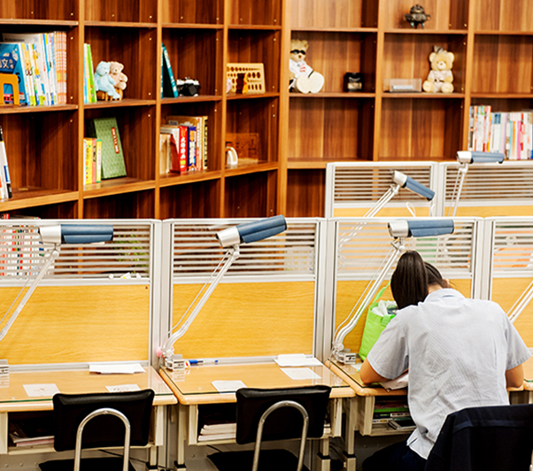

關於
於西元1994年創立迄今，兼併中西方教育特質，為全國首創青少年教育聯合診所模式之高端文教機構，研創多項教育核心技術，將青少年教育所衍生問題與醫學流程完美契合。多年來，團隊以科學化與人性化思維，完成數百餘個案處理，有效加速青少年(高國中生)學業成績進步與提升。
團隊核心價值
面對挫折
誠學書房深知對於青少年而言，挫折是越早面對、越早享用，因此在學習情境中，我們會讓挫折儘量湧出，而後進行前後排序，並逐一面對處理。青少年越早面對挫折，則越早擁有解決問題的能力，如此一來，不僅是學習或是生活事務處理，甚或是未來面對自己理想實現過程中的挫折時，必能使父母教師更為省心。
習於修正
誠學書房在處理青少年教育問題時，首重於參酌近年來遭遇相同問題案例之處理方式及其所產生的結果，以作為眼下問題處理之借鏡，亦即以實案經驗告訴我們該如何修正。已多次驗證為錯誤之處理方式，則應避免。
承擔責任
誠學書房教育團隊之另項永續責任在於珍惜父母與學生未來所期待之託付，以S.T.P. Report技術深入於彼此間，不斷溝通、執行、導入，視父母、學生的託付為彼此共同目的，並建立永續的夥伴關係。在此技術使用過程中，再行強化彼此的共同努力是源於為教育過程中之無縫隙狀態接軌。
學制
讀書生
招收對象：青少年(高國中生)13-18歲。
- 全時制(以出缺勤表搭配學生現實中各項行程)。
研修生
招收對象：青少年前期10-12歲，青少年13-18歲。
- 單時制(每週1-3小時，每次檢核2-3科目課自評，分次輪動)。
- GSPMA長期建置。
- S.W.學業異常狀況監控。
- B.R.G.立即執行(進行Study Diary編著，1/1-6/30，7/1-12/31)。
- M-plan導入。
- D.S.P.獎學金計畫。
特色
GSPMA
目標、策略、計劃、管理、實行，適時性建構技術
B.R.G
學校每日作業考試讀書項目，程序編列並系統性的完成
M-Plan
大型考試優化技術,即刻性反應與修正
S.W.O.T
正負高低數探索，優勢機會持穩，劣勢威脅翻轉